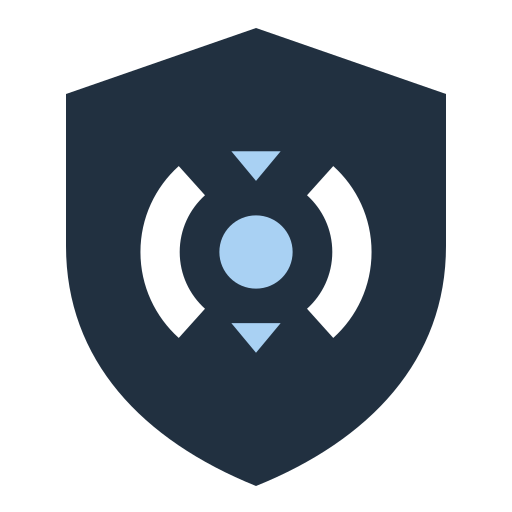

Zoraxy WAF
Turn on protection
Each host learns from its first request and blocks nothing. After the learning period it starts blocking on its own, once its open findings are resolved.
Block right away instead
Blocking right away can reject real users, for example PUT or PATCH requests of web apps.
Loading…
Attacks today–
Blocked · 24 h–
Not blocked · 24 h–learning or report only
Status
Attacks per hour
Last 24 hours
Attacks per day
Last 30 days
Attack types
Top targets
Top rules
Top sources
More protection in Zoraxy
- : block countries and IP ranges
- : rate limiting and basic auth per host
Diagnostics
Learning
Open findings were sent with a login (cookie or token), so they may be real users. Each keeps its host learning until you decide.
Hosts
Host settings
Events
Newest 200 events. Events never contain bodies, passwords or cookie values; paths, IPs and User-Agents can still be personal data.
Exceptions
New exception
Alerts
Sends alerts to a chat or a monitoring webhook. Failed deliveries are not retried.